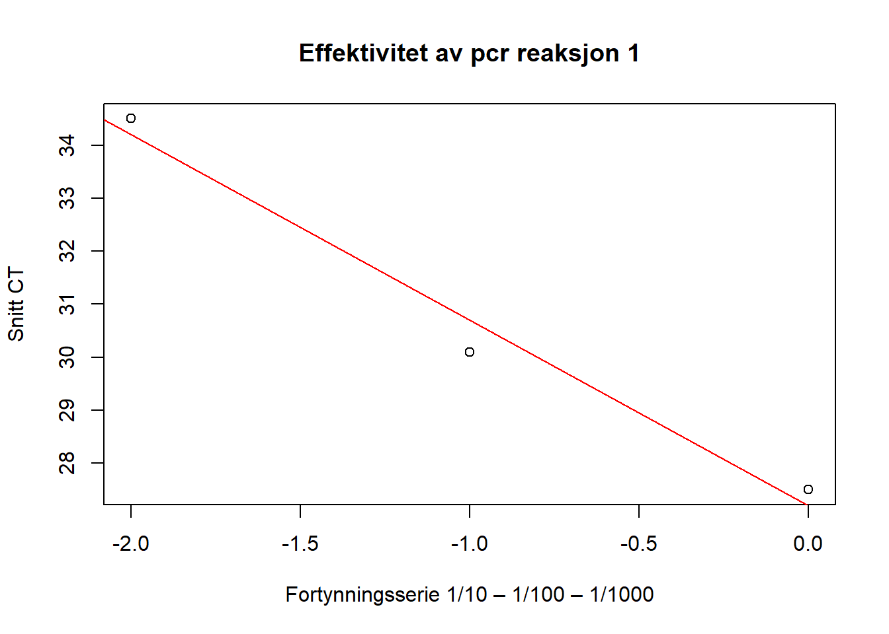
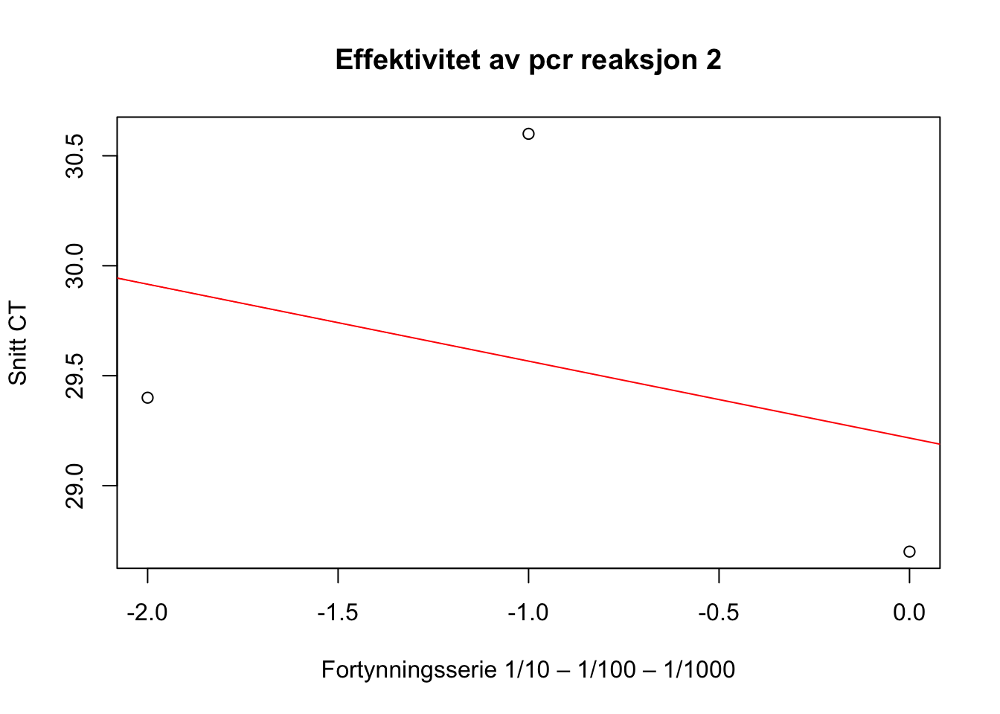

| Tabell 1: Endring i muskeltype sammensetning Uke 0 og Uke 2 | ||
| Fibertype | Uke 0 | Uke 2 |
|---|---|---|
| MHC1 | 35.43 | 27.33 |
| MHC-2a | 0.61 | 72.21 |
| MHC-2x | 63.96 | 4.61 |
| Tallene er i prosent | ||
Labrapport
Introduksjon
Analyser av genuttrykk gjennom fluorisens-basert sanntids kvantitativ polymerase kjedereaksjon (qPCR) er fast praksis i mange medisinske treningsstudier (Kuang et al., 2018). qPCR benyttes til å måle uttrykket av et målgen i prøver fra blant annet blod og muskelvev. Et vanlig bruksområde innenfor treningsfysiologi er for eksempel å måle treningsinduserte endringer i genutrykk for ulike muskelfibertyper. Selv om denne typen analyse er svært utbredt, finnes det mange ulike protokoller og måter å gjennomføre analysen på. Reproduserbarheten og reliabiliteten til dataen avhenger i stor grad av hvordan eksperimentene gjennomføres og tolkes. For å sikre så reliable tester som mulig, er det viktig med en detaljert og nøye protokoll (Kuang et al., 2018).
Prinsippet bak en qPCR-analyse er å følge PCR i sanntid. For å gjennomføre PCR må vi først ekstrahere RNA fra en biologisk celleprøve. Deretter blir RNAet gjort om til cDNA i en prosesses kalt reversert transkripsjon. Med PCR blir dette cDNAet deretter amplifisert opp til milliarder av kopier (Kuang et al., 2018). Hver syklus i en PCR er består av tre steg for å kopiere opp det aktuelle DNAet. I første steg (denaturering) blir DNAet utsatt for høy temperatur for å dele DNAet fra dobbeltrådet til enkelttrådet. I det andre steget (annealing) blir temperaturen senket og primere fester seg til templat-trådene. I det siste steget (elongering) øker temperaturen igjen og DNA-polymeraser fester seg til primerne og syntetiserer et nytt dobbelttrådet DNA, likt det vi startet med (Kuang et al., 2018). Deretter vil denne syklusen repetere seg, slik at DNAet dobles ekspontensielt for hver syklus. I en qPCR som benytter SYBR green-metoden blir det aktuelle DNAet bundet til fluorosens under hver syklus slik at man kan følge PCR-prosessen i sanntid, ved å ta et bilde som detekterer fluorescensen etter hver syklus (Kuang et al., 2018). Mengden cDNA og fluorescens dobles etter hver syklus, og signalet av fluorescens øker dermed eksponentielt. Hvor raskt signalet av fluorescens når en satt grense kalt syklisk terskel (CT), bedømmer hvor sort uttrykk av et gen vi har. Jo færre sykluser som må gjennomføres for å nå CT, jo større uttrykk av målgenet hadde vi i celleprøven vår (Livak & Schmittgen, 2001).
Metode
I forkant av forsøket hadde labansvarlig forberedt cDNA. qPCR-analyse ble gjort ved bruk av cDNA og en Master mix. Master mixen besto av 5μl Cybr-green, 1μl primer mix (MCH1, MHC2a, MCH2x eller MCHb2m) og 2μl H2O. På en plate med brønner ble det tilført 8μl Master mix i brønnene sammen med 2μl cDNA. I tillegg til dette lagde vi en fortynningsserie for å teste primerne. Fortynningene vi brukte var 1/1, 1/10, 1/100, 1/1000, 1/10000, 1/100000 og 1/1000000. I 1/1 prøven var det 2μl cDNA og 8μl cmyc. Fortynningsserien tok utgangspunkt i denne prøven og ble fortynnet med H2O. Platen ble så dekket med plast og sentrifiugert på 1200rpm i 1 minutt. PCR-prosessen besto av tre deler, en “Hold stage” en “PCR stage” og en “Melt curve stage”. Det første steget gikk ut på at temperaturen økte med 1,99°C/s opp til 50°C hvor temperaturen forble konstant i 2 min. Videre Økte temperaturen med 1,99°C/s opp til 95°C hvor temperaturen forble konstant i 2 min. Deretter startet selve PCR-prosessen som besto av 40 sykluser. Én syklus besto av 1 sek på 95°C før temperaturen sank med 1,77°C/s ned til 60°C hvor temperaturen ble holdt konstant i 30 sek. Etter hver syklus ble det tatt bilde av brønnenes fluorescens. Avslutningsvis økte temperaturen med 1,99°C/s opp til 95°C hvor temperaturen holdes konstant i 15 sek. Deretter synker temperaturen med 1,77°C/s ned til 60°C hvor temperaturen holdes konstant i 1 min. Temperaturen økte deretter med 0,15°C/s opp til 95°C hvor temperaturen ble holdt konstant i 15 sek. Etter PCR-prosessen var ferdig kunne vi hente ut resultatene i form av CT-verdier.
Resultat
| Tabell 2: Vurdering av CT verdi | ||
| Fibertype | Uke 0 | Uke 2 |
|---|---|---|
| MHC1 | 27.93 | 3.35 |
| MHC-2a | 28.60 | 4.42 |
| MHC-2x | 0.27 | 4.76 |
| 27 er muskelfibertype. 28 er Uke 0. 29 er Uke 2. Tallene er vist som CV%. CV på 0-5 prosent er gode tall, mens verdi over 10 prosent er avvikstall. | ||
Effektivitet av Fortynningsserie 1/10 – 1/100 – 1/1000


| Tabell 3: Tall fra reaksjon Uke 0 | ||||
| Fortynningsserie | Snitt CT | Log | Slope | Primer eff |
|---|---|---|---|---|
| 1/1 | 27.45970 | 0 | -3.524092 | 92.2034 |
| 1/10 | 30.07881 | -1 | NA | NA |
| 1/100 | 34.50788 | -2 | NA | NA |
| 1/1000 | NA | -3 | NA | NA |
| 1/100000 | NA | -4 | NA | NA |
| 1/100000 | NA | -5 | NA | NA |
| Tabell 4: Tall fra reaksjon Uke 2 | ||||
| Fortynningsserie | Snitt CT | Log | Slope/stigningstall | Primer efficiency (%) |
|---|---|---|---|---|
| 1/1 | 28.69725 | 0 | -0.3741574 | 46962.15 |
| 1/10 | 30.60317 | -1 | NA | NA |
| 1/100 | 29.44557 | -2 | NA | NA |
| 1/1000 | NA | -3 | NA | NA |
| 1/100000 | NA | -4 | NA | NA |
| 1/100000 | NA | -5 | NA | NA |
Anbefalt primer effektivitet er mellom 93 % og 105 % (Kuang 2018). Dette viser at på tabell 2 er det en feil i fortynningsrekken. Muligens pipeteringsfeil da elab journal viste usikkerhet rundt hva som var pipettert i ett av kamrene.
Diskusjon
Konklusjon
Referanser
Kuang, J., Yan, X., Genders, A. J., Granata, C., & Bishop, D. J. (2018). An overview of technical considerations when using quantitative real-time PCR analysis of gene expression in human exercise research. PLOS ONE, 13(5), e0196438. https://doi.org/10.1371/journal.pone.0196438
Livak, K. J., & Schmittgen, T. D. (2001). Analysis of Relative Gene Expression Data Using Real-Time Quantitative PCR and the 2-\(\Delta\Delta\)CT Method. Methods, 25(4), 402–408. https://doi.org/10.1006/meth.2001.1262